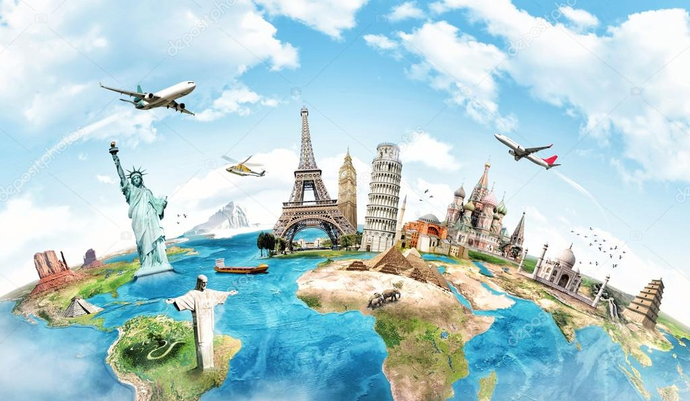

Подорожі
Чому люди так люблять подорожувати? Здавалося б, в епоху інформаційних технологій можна навіть не виходити з дому. Так, пам’ятки світу можна подивитися на екрані свого комп’ютера, а за допомогою сучасних технологій навіть відчути ефект присутності в якійсь країні. Але, тільки про ту людину, яка подорожує, можна сказати, що вона по-справжньому багата. Адже вона не просто відвідує різні країни і культури, а й змінює себе, трансформується, відкривається новому і пізнає світ. Навіщо потрібні подорожі? Більша частина нашого життя проходить за роботою, сімейними або побутовими справами. Озираючись назад, ми розуміємо, що багато часу витратили на те, щоб заробити гроші, отримати освіту, виростити дітей. І якщо не міняти обстановку і постійно перебувати в однотипній атмосфері, можна втратити себе і втратити інтерес до життя. Час подорожувати з Маншафт - ФотоПодорожі допомагають нам відпочити від побуту, забути про роботу, струсити з себе стрес і проблеми, а також переоцінити своє життя. Відвідуючи інші країни або міста, відпочиваючи на курортах, плескаючись в теплому морі, ми по-новому оцінюємо світ, а також краще пізнаємо себе. Лише в подорожах виходить повністю розслабитися, відкритися і впорядкувати свої думки. Побачити красу світу і насолодитися відпочинком Коли людина стає туристом, вона починає пізнавати світ не з картинки телевізора, а через себе. Вона може спілкуватися з іншими народами, бачити їх культуру, пробувати їжу, слухати колоритні пісні і насолоджуватися пам’ятками. Це дозволяє легше зіставляти різні точки зору, ставати більш терпимою і доброзичливою. Подорожуючи людина поглинає культуру місцевості. Побачити красу світу і насолодитися відпочинком - Фото Для туриста кожна нова подорож – це як маленьке життя. У ній можна дозволити собі стати іншим, спробувати щось нове і навіть перебороти свої страхи. А ще це неймовірний досвід, який впливає на нас. Вирвавшись з рутини, ми можемо прийняти важливе для себе рішення і круто змінити своє життя.
28.04.2023